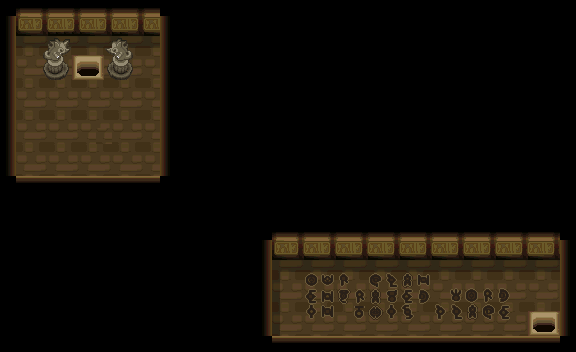
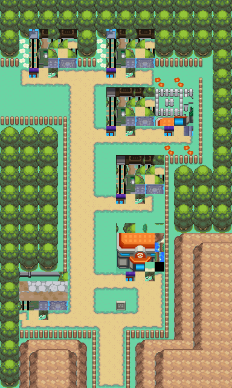
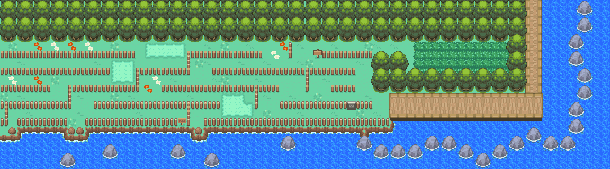
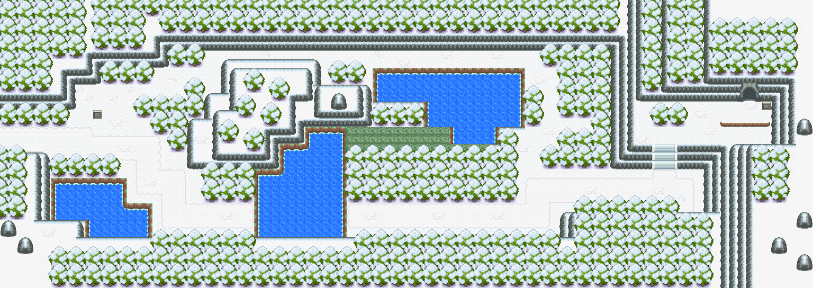
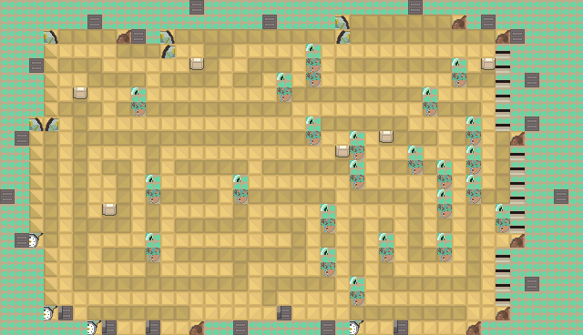
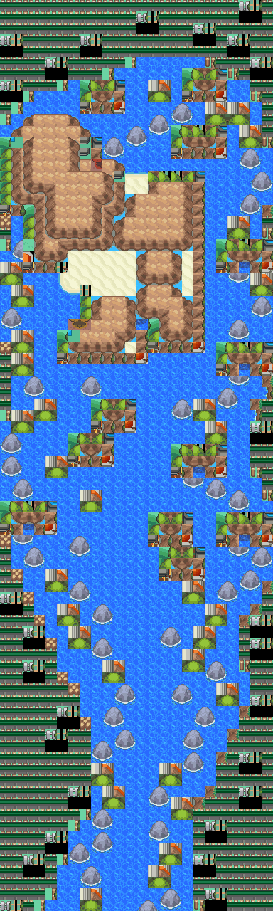
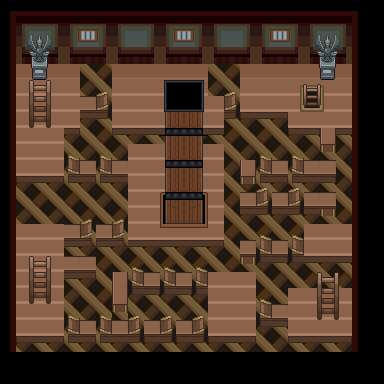
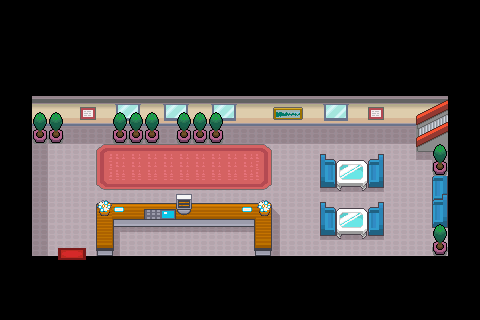
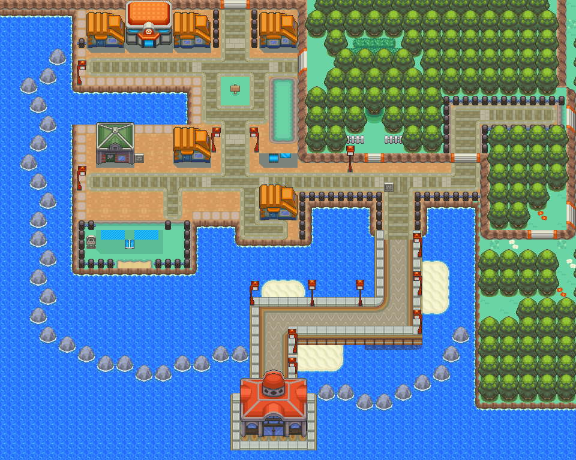
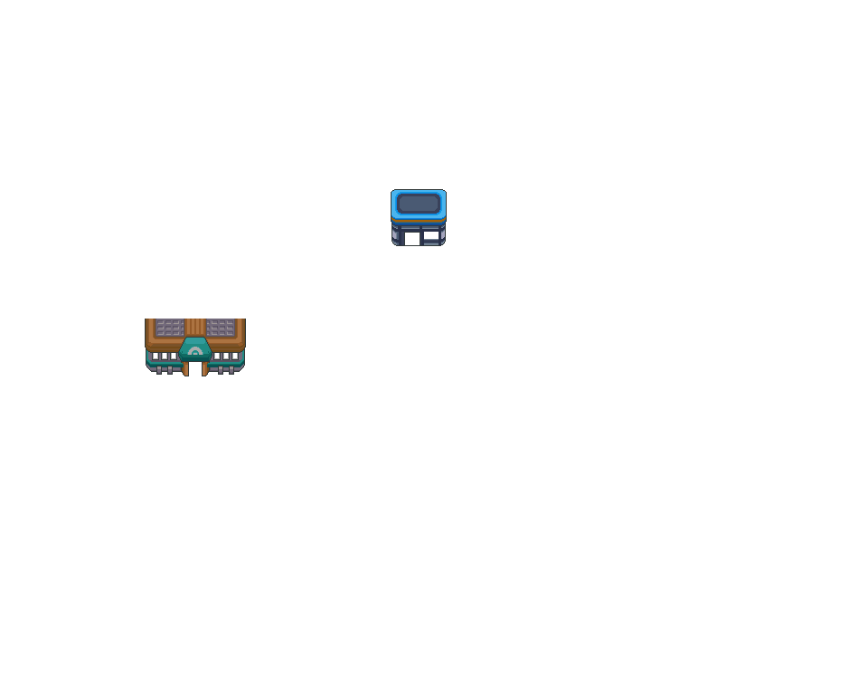

PP提升剂
少量提升1个技能的PP最大值。
获取：火箭队基地(16,17) ／ 阿露福遗迹(8,16) ／ 玉虹市(55,20) ／ 桔梗市(5,13) ／ 13号公路(23,14) ／ 17号公路(4,68) ／ 38号道路(10,20) ／ 39号道路(30,34) ／ …等 29 处
用途
少量提升1个技能的PP最大值。
标价 10000 口袋：道具
获取方式
地面隐藏
- 火箭队基地（区域133） · (16,17) · 数量 1 · 地图
- 阿露福遗迹（区域134） · (8,16) · 数量 1 · 地图｜静态图
- 玉虹市（区域94） · (55,20) · 数量 1 · 地图｜静态图
- 桔梗市（区域145） · (5,13) · 数量 1 · 地图｜静态图
- 13号公路（区域113） · (23,14) · 数量 1 · 地图｜静态图
- 17号公路（区域117） · (4,68) · 数量 1 · 地图｜静态图
- 38号道路（区域163） · (10,20) · 数量 1 · 地图｜静态图
- 39号道路（区域164） · (30,34) · 数量 1 · 地图｜静态图
- 44号道路（区域169） · (10,2) · 数量 1 · 地图｜静态图
- 45号道路（区域170） · (10,77) · 数量 1 · 地图｜静态图
- 51号水路（区域195） · (80,8) · 数量 1 · 地图｜静态图
- 50号水路（区域130） · (13,49) · 数量 1 · 地图｜静态图
- 漩涡岛（区域176） · (50,25) · 数量 1 · 地图｜静态图


人物剧情
- 对战开拓区（区域219） · (26,20) · 与坐标处人物交互 · 数量 1 · 地图｜静态图 · 触发条件待补
- 华蓝洞（区域141） · (9,18) · 与坐标处人物交互 · 数量 1 · 地图｜静态图 · 触发条件待补
- 36号道路（区域161） · (3,22) · 与坐标处人物交互 · 数量 1 · 地图｜静态图 · 触发条件待补
- 38号道路（区域163） · (11,16) · 与坐标处人物交互 · 数量 1 · 地图｜静态图 · 触发条件待补
- 铃铛塔（区域135） · (18,18) · 与坐标处人物交互 · 数量 1 · 地图｜静态图 · 触发条件待补
- 冠军之路（区域132） · (24,5) · 与坐标处人物交互 · 数量 1 · 地图｜静态图 · 触发条件待补
- 桔梗市（区域145） · (21,13) · 与坐标处人物交互 · 数量 1 · 地图｜静态图 · 触发条件待补
- 34号道路（区域159） · (25,46) · 与坐标处人物交互 · 数量 1 · 地图｜静态图 · 触发条件待补
- 光辉灯塔（区域186） · (26,16) · 与坐标处人物交互 · 数量 1 · 地图｜静态图 · 触发条件待补
- 满金市（区域147） · (10,14) · 与坐标处人物交互 · 数量 1 · 地图｜静态图 · 触发条件待补
- 湛蓝市（区域150） · (6,4) · 与坐标处人物交互 · 数量 1 · 地图｜静态图 · 触发条件待补
- 50号水路（区域130） · (20,24) · 与坐标处人物交互 · 数量 1 · 地图｜静态图 · 触发条件待补
- 50号水路（区域130） · (34,38) · 与坐标处人物交互 · 数量 1 · 地图｜静态图 · 触发条件待补
- 擂钵山（区域99） · (34,47) · 与坐标处人物交互 · 数量 1 · 地图｜静态图 · 触发条件待补
- 45号道路（区域170） · (18,41) · 与坐标处人物交互 · 数量 1 · 地图｜静态图 · 触发条件待补
- 枯叶市（区域93） · (42,17) · 与坐标处人物交互 · 数量 1 · 地图｜静态图 · 触发条件待补


数据来源
- 来源文档：out/items.json（
/69） - 表索引 index 0069；内嵌 itemId 69；口袋 ITEMS (id=1)；type 1；hold_effect 0/0；importance 0；unk19 0
- 获取来源文档：maps_research/out/events/events.json、maps_research/out/scripts/scripts.json
- 获取记录 ID：
hidden:1:42:0、hidden:1:51:16、hidden:3:6:8、hidden:3:14:1、hidden:3:31:3、hidden:3:35:8、hidden:3:91:9、hidden:3:93:1、hidden:3:98:3、hidden:3:101:6、hidden:3:104:2、hidden:3:105:4、hidden:55:15:5、script_item_candidate:09CE144F:54:12、script_item_candidate:std:081BEA78:1:73、script_item_candidate:std:081BEC80:3:56、script_item_candidate:std:081BEC9A:3:58、script_item_candidate:std:087BD32E:55:20、script_item_candidate:std:087BEC59:1:39、script_item_candidate:std:089E6F91:3:68、script_item_candidate:std:089E75FD:3:88、script_item_candidate:std:089F46BD:49:13、script_item_candidate:std:08AA2FD4:50:23、script_item_candidate:std:08AAD64F:49:5、script_item_candidate:std:08AE0030:3:103、script_item_candidate:std:08AE00A5:3:103、script_item_candidate:std:08D55D09:55:11、script_item_candidate:std:08F3E116:3:101、script_item_candidate:std:09CDF6B8:3:5 - 说明文字解码来源：
reference/SAVE_HOME_GAME_DATA.json.charmap
地点地图
共享RGB底图；点击可缩放定位。数字对应本页相关地点，不代表地图上全部事件。
火箭队基地
阿露福遗迹

1 PP提升剂（8,16）
玉虹市

1 PP提升剂（55,20）
桔梗市

1 PP提升剂（5,13）
13号公路

1 PP提升剂（23,14）
17号公路

1 PP提升剂（4,68）
展开其余 21 张地点地图
38号道路


1 PP提升剂（10,20）
39号道路


1 PP提升剂（30,34）
44号道路

1 PP提升剂（10,2）
45号道路


1 PP提升剂（18,41）；2 PP提升剂（10,77）
51号水路

1 PP提升剂（80,8）
50号水路

1 PP提升剂（13,49）
漩涡岛

1 PP提升剂（50,25）
对战开拓区

1 PP提升剂（26,20）
华蓝洞

1 PP提升剂（9,18）
36号道路 · 五之岛旧布局

1 PP提升剂（3,22）
本图保留原FiveIsland_Meadow布局，当前图块资源与旧布局不匹配；地区段名称被改为36号道路，不能将它当作当前城都36号道路。
38号道路

1 PP提升剂（11,16）
铃铛塔

1 PP提升剂（18,18）
冠军之路

1 PP提升剂（24,5）
桔梗市


1 PP提升剂（21,13）
34号道路

1 PP提升剂（25,46）
光辉灯塔

1 PP提升剂（26,16）
满金市

1 PP提升剂（10,14）
湛蓝市


1 PP提升剂（6,4）
50号水路

1 PP提升剂（20,24）；2 PP提升剂（34,38）
擂钵山

1 PP提升剂（34,47）
枯叶市


1 PP提升剂（42,17）